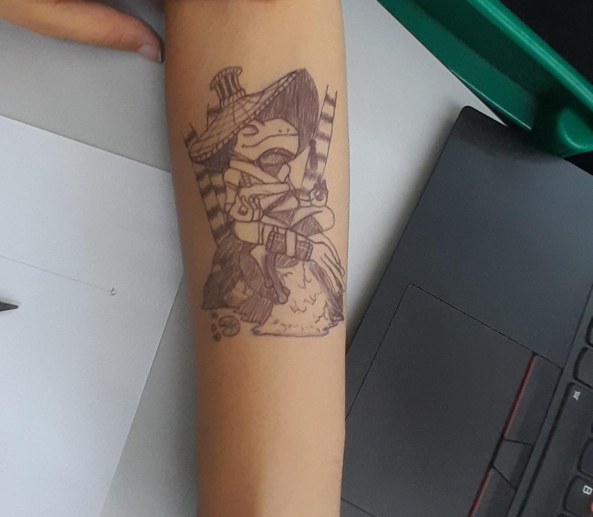
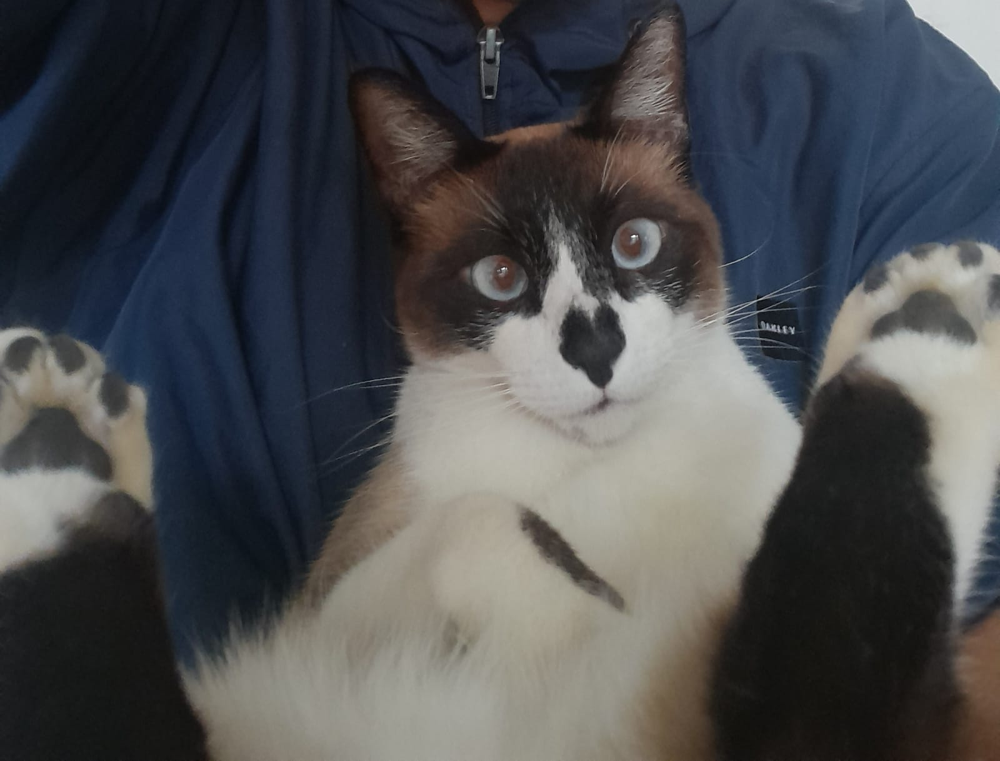
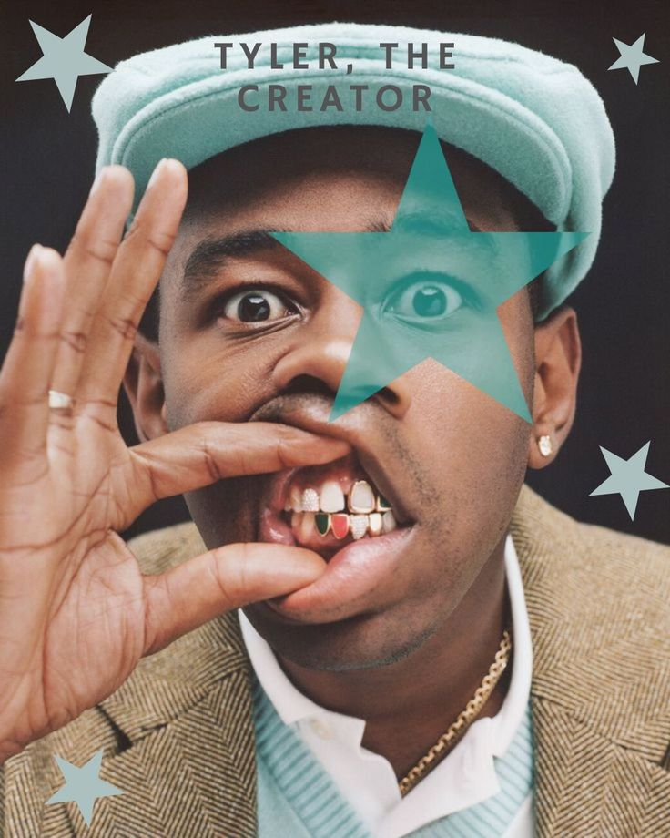

✨No meu tempo livre, gosto de realizar atividades que contribuam para meu bem-estar e desenvolvimento pessoal. Aprecio momentos de leitura, música, conversas, artesanato, desenhos e, principalmente, o tempo que passo com meu gato, pois acredito que essas experiências ampliam minha visão de mundo, fortalecem minhas relações e contribuem para minha construção individual, desenvolvendo habilidades e interesses importantes.


